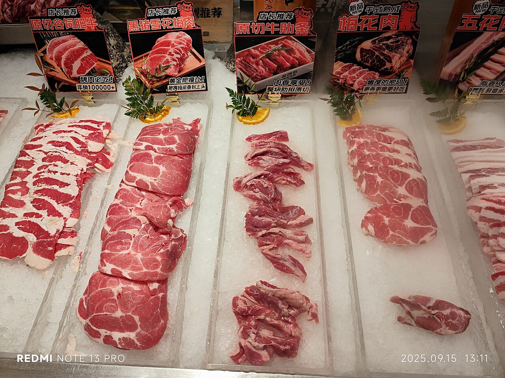
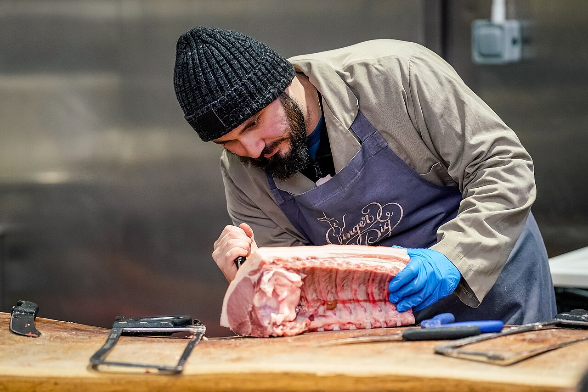
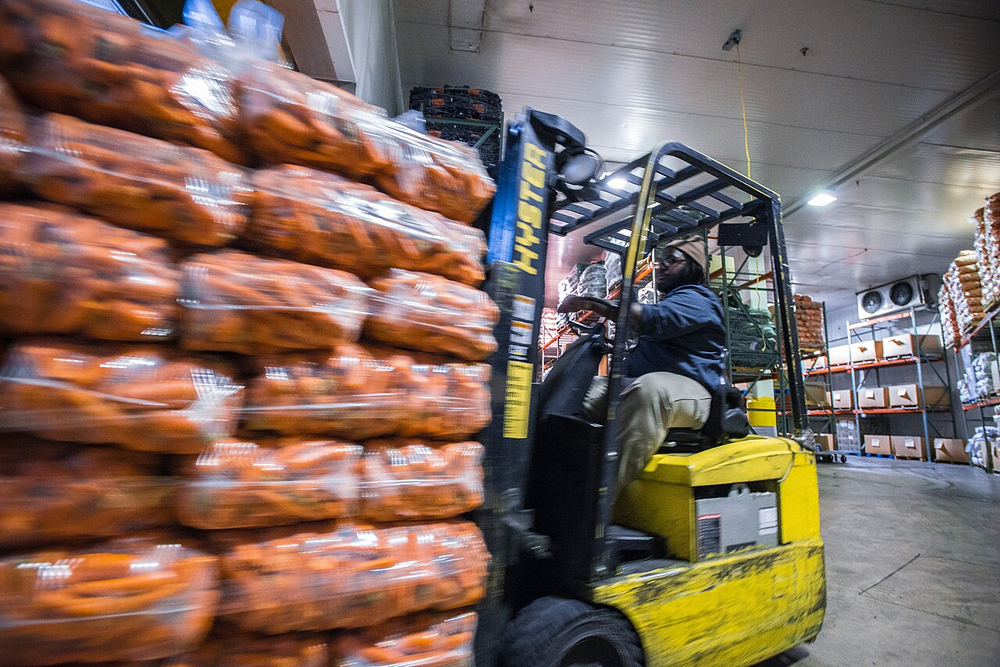

From Farm to Table, Trusted for Generations.
View Our Products Wholesale InquiriesIronvale Meats has been hand-processing quality beef, pork, and poultry for over 45 years. What started as a single family butcher shop is now a full-service USDA-inspected packing plant serving grocers, restaurants, and families across the region.
Every category is processed in-house and hand-cut by our butchers. Browse the full product list or reach out for wholesale volume pricing.

Ribeye, New York strip, ground beef, brisket, and short ribs — hand-cut and aged for flavor.
See Beef Cuts

Whole chicken, chicken breast, chicken thighs, and ground turkey, packed fresh daily.
See PoultryOur plant is USDA-inspected daily and HACCP-certified. Every cut is processed in temperature-controlled rooms and shipped in a continuous cold chain to guarantee freshness.
Read Our StandardsPhoto: U.S. Department of Agriculture / Lance Cheung, Wikimedia Commons (Public domain)
Interested in wholesale pricing? Fill out the form below and our sales team will respond within one business day.
Get in Touch